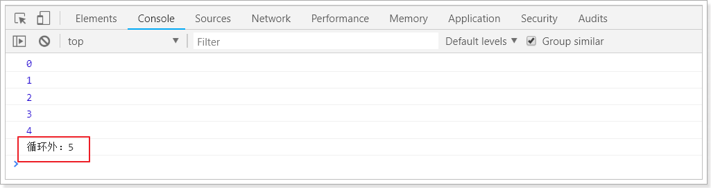
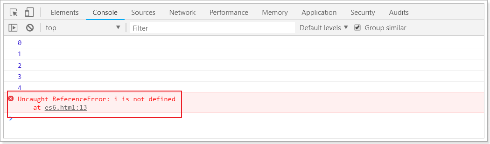
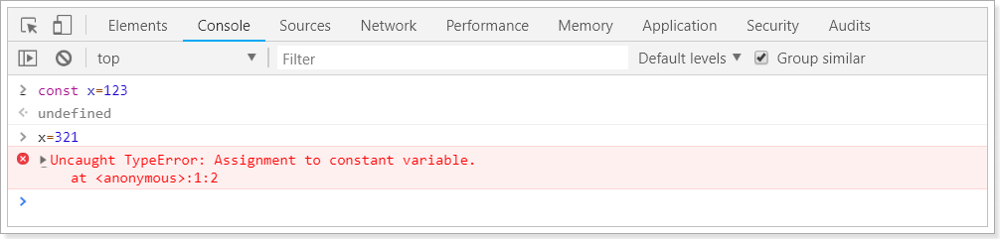
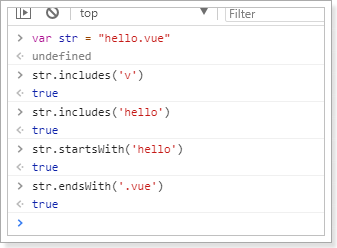
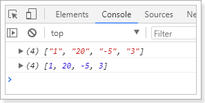
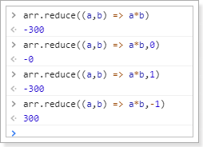

后端项目搭建完毕，接下来就是前端页面了。不过在这之前需要一些准备工作。我们需要学习ES6的语法标准。
什么是ES6？就是ECMAScript第6版标准。
什么是ECMAScript？
来看下前端的发展历程：
web1.0时代：
- 最初的网页以HTML为主，是纯静态的网页。网页是只读的，信息流只能从服务的到客户端单向流通。开发人员也只关心页面的样式和内容即可。
web2.0时代：
- 1995年，网景工程师Brendan Eich 花了10天时间设计了JavaScript语言。
- 1996年，微软发布了JScript，其实是JavaScript的逆向工程实现。
- 1997年，为了统一各种不同script脚本语言，ECMA（欧洲计算机制造商协会）以JavaScript为基础，制定了
ECMAscript标准规范。JavaScript和JScript都是ECMAScript的标准实现者，随后各大浏览器厂商纷纷实现了ECMAScript标准。
所以，ECMAScript是浏览器脚本语言的规范，而各种我们熟知的js语言，如JavaScript则是规范的具体实现。
ECMAScript的快速发展
而后，ECMAScript就进入了快速发展期。
1998年6月，ECMAScript 2.0 发布。
1999年12月，ECMAScript 3.0 发布。这时，ECMAScript 规范本身也相对比较完善和稳定了，但是接下来的事情，就比较悲剧了。
2007年10月。。。。ECMAScript 4.0 草案发布。
这次的新规范，历时颇久，规范的新内容也有了很多争议。在制定ES4的时候，是分成了两个工作组同时工作的。
- 一边是以 Adobe, Mozilla, Opera 和 Google为主的 ECMAScript 4.0 工作组。
- 一边是以 Microsoft 和 Yahoo 为主的 ECMAScript 3.1 工作组。
ECMAScript 4 的很多主张比较激进，改动较大。而 ECMAScript 3.1 则主张小幅更新。最终经过 TC39 的会议，决定将一部分不那么激进的改动保留发布为 ECMAScript 3.1，而ES4的内容，则延续到了后来的ECMAScript5和6版本中
2009年12月，ECMAScript 5 发布。
2011年6月，ECMAScript 5.1 发布。
2015年6月，ECMAScript 6，也就是 ECMAScript 2015 发布了。 并且从 ECMAScript 6 开始，开始采用年号来做版本。即 ECMAScript 2015，就是ECMAScript6。 它的目标，是使得 JavaScript 语言可以用来编写复杂的大型应用程序，成为企业级开发语言。
ES5和6的一些新特性
我们这里只把一些常用的进行学习，更详细的大家参考：阮一峰的ES6教程
创建一个空的html页面：
<!DOCTYPE html>
<html lang="en">
<head>
<meta charset="UTF-8">
<meta name="viewport" content="width=device-width, initial-scale=1.0">
<meta http-equiv="X-UA-Compatible" content="ie=edge">
<title>Document</title>
</head>
<script>
</script>
<body>
</body>
</html>let 和 const 命令
var
之前，js定义变量只有一个关键字：var
var有一个问题，就是定义的变量有时会莫名奇妙的成为全局变量。
例如这样的一段代码：
for(var i = 0; i < 5; i++){
console.log(i);
}
console.log("循环外：" + i)你猜下打印的结果是什么？

let
let所声明的变量，只在let命令所在的代码块内有效。
我们把刚才的var改成let试试：
for(let i = 0; i < 5; i++){
console.log(i);
}
console.log("循环外：" + i)结果：

const
const声明的变量是常量，不能被修改

字符串扩展
新的API
ES6为字符串扩展了几个新的API：
includes()：返回布尔值，表示是否找到了参数字符串。startsWith()：返回布尔值，表示参数字符串是否在原字符串的头部。endsWith()：返回布尔值，表示参数字符串是否在原字符串的尾部。
实验一下：

字符串模板
ES6中提供了`来作为字符串模板标记。我们可以这么玩：

在两个`之间的部分都会被作为字符串的值，不管你任意换行，甚至加入js脚本
解构表达式
数组解构
比如有一个数组：
let arr = [1,2,3]我想获取其中的值，只能通过角标。ES6可以这样：
const [x,y,z] = arr;// x，y，z将与arr中的每个位置对应来取值
// 然后打印
console.log(x,y,z);结果：

对象解构
例如有个person对象：
const person = {
name:"jack",
age:21,
language: ['java','js','css']
}我们可以这么做：
// 解构表达式获取值
const {name,age,language} = person;
// 打印
console.log(name);
console.log(age);
console.log(language);结果：

如过想要用其它变量接收，需要额外指定别名：

{name:n}：name是person中的属性名，冒号后面的n是解构后要赋值给的变量。
函数优化
函数参数默认值
在ES6以前，我们无法给一个函数参数设置默认值，只能采用变通写法：
function add(a , b) {
// 判断b是否为空，为空就给默认值1
b = b || 1;
return a + b;
}
// 传一个参数
console.log(add(10));现在可以这么写：
function add(a , b = 1) {
return a + b;
}
// 传一个参数
console.log(add(10));箭头函数
ES6中定义函数的简写方式：
一个参数时：
var print = function (obj) {
console.log(obj);
}
// 简写为：
var print2 = obj => console.log(obj);多个参数：
// 两个参数的情况：
var sum = function (a , b) {
return a + b;
}
// 简写为：
var sum2 = (a,b) => a+b;代码不止一行，可以用{}括起来
var sum3 = (a,b) => {
return a + b;
}对象的函数属性简写
比如一个Person对象，里面有eat方法：
let person = {
name: "jack",
// 以前：
eat: function (food) {
console.log(this.name + "在吃" + food);
},
// 箭头函数版：
eat2: food => console.log(person.name + "在吃" + food),// 这里拿不到this
// 简写版：
eat3(food){
console.log(this.name + "在吃" + food);
}
}箭头函数结合解构表达式
比如有一个函数：
const person = {
name:"jack",
age:21,
language: ['java','js','css']
}
function hello(person) {
console.log("hello," + person.name)
}如果用箭头函数和解构表达式
var hi = ({name}) => console.log("hello," + name);map和reduce
数组中新增了map和reduce方法。
map
map()：接收一个函数，将原数组中的所有元素用这个函数处理后放入新数组返回。
举例：有一个字符串数组，我们希望转为int数组
let arr = ['1','20','-5','3'];
console.log(arr)
arr = arr.map(s => parseInt(s));
console.log(arr)
reduce
reduce()：接收一个函数（必须）和一个初始值（可选）。
第一个参数（函数）接收两个参数：
- 第一个参数是上一次reduce处理的结果
- 第二个参数是数组中要处理的下一个元素
reduce()会从左到右依次把数组中的元素用reduce处理，并把处理的结果作为下次reduce的第一个参数。如果是第一次，会把前两个元素作为计算参数，或者把用户指定的初始值作为起始参数
举例：
const arr = [1,20,-5,3]没有初始值：

指定初始值：

对象扩展
ES6给Object拓展了许多新的方法，如：
keys(obj)：获取对象的所有key形成的数组
values(obj)：获取对象的所有value形成的数组
entries(obj)：获取对象的所有key和value形成的二维数组。格式：
[[k1,v1],[k2,v2],...]assign(dest, …src) ：将多个src对象的值 拷贝到 dest中（浅拷贝）。

数组扩展
ES6给数组新增了许多方法：
- find(callback)：数组实例的find方法，用于找出第一个符合条件的数组成员。它的参数是一个回调函数，所有数组成员依次执行该回调函数，直到找出第一个返回值为true的成员，然后返回该成员。如果没有符合条件的成员，则返回undefined。
- findIndex(callback)：数组实例的findIndex方法的用法与find方法非常类似，返回第一个符合条件的数组成员的位置，如果所有成员都不符合条件，则返回-1。
- includes(数组元素)：与find类似，如果匹配到元素，则返回true，代表找到了。